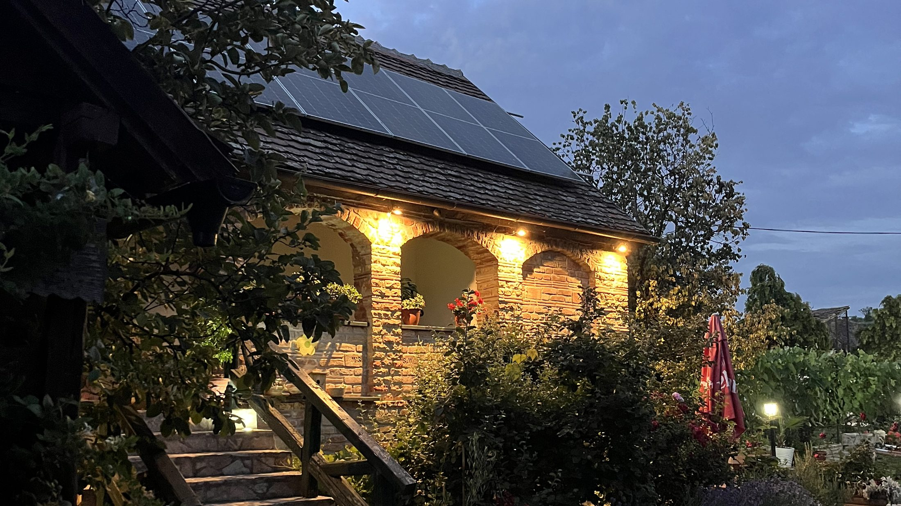
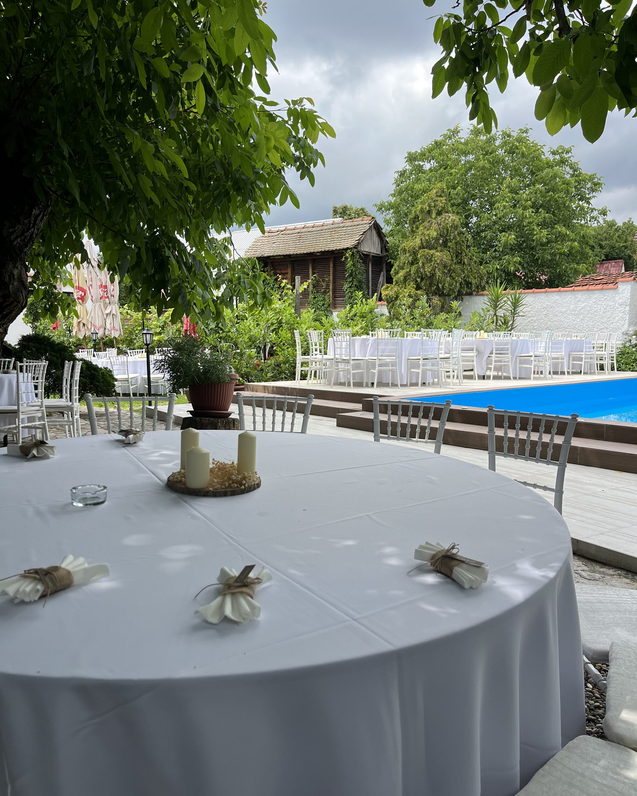

Vrdnik · Fruška gora
Übernachtung, Kücheund Weinkelleran einem Ort
Unterkunft in einem restaurierten Haus aus dem Srem, ein Restaurant mit Hausmannskost und ein Salzwasserpool. In Vrdnik, vierzig Minuten von Novi Sad. Für Familienurlaub, ein Wochenende zu zweit oder einen ruhigen Aufenthalt in der Natur der Fruška gora.
- Haustiere willkommenDer Hund reist mit, Sie brauchen keine Betreuung
- Völlige PrivatsphäreAn diesem Tag kommt nur Ihre Gesellschaft durchs Tor
- 40 Minuten von Novi SadNah genug für Hinfahrt und Rückfahrt am selben Tag
- Garten mit 900 m²Platz für Kinder, Grill und eine lange Tafel im Schatten
- Kostenloser ParkplatzVor dem Tor, genug für die ganze Gesellschaft
Kurz gefasst
Ein sremisches Haus aus dem 19. Jahrhundert, mit dem ganzen Anwesen dazu
Der kućerak ist ein restauriertes sremisches Haus mitten in Vrdnik, mit gemauertem Ofen, Holzbalken und einem Weinkeller darunter. Vergeben wird das ganze Anwesen, und immer nur an eine Gesellschaft.
Draußen erwarten Sie ein weiter Hof, ein Walnussbaum, der den Pool beschattet, und ein Grill, der läuft, wann immer Sie ihn brauchen.
Die Bewertung auf Google liegt bei 4,7 von 5, aus mehr als 300 Rückmeldungen.
FeiernPrivatsphäre
An diesem Tag sind Sie die einzigen Gäste
Der kućerak wird nicht geteilt. An diesem Tag gehören Hof, Pool, Speiseraum und Keller allein Ihnen. Sie stören niemanden, niemand stört Sie, und Sie müssen sich nach nichts richten.
Der Pool
Restaurant
Das Menü nach Ihrer Wahl
Die Gäste wählen das Menü gemeinsam mit uns, damit alles auf Sie abgestimmt ist.
Gäste
„Der Gastgeber und seine Frau sind ausgesprochen freundlich. Zur Begrüßung gab es Kaffee und selbstgemachten Saft.”
Ein Gast · Google, 4,7 von 5 (mehr als 300 Bewertungen)
Reservierung
Erfahren Sie, ob Ihr Termin frei ist
Schicken Sie uns Datum und Gästezahl. Wir antworten am selben Tag, mit allem, was Sie vor Ihrer Entscheidung wissen müssen.